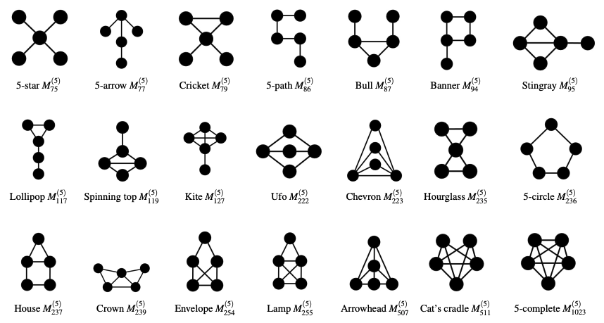

Adventure gamebooks, like the Fighting Fantasy series or Choose Your Own Adventure books, are written as a bunch of scenes which, if read in the order printed, make no sense. Each is a scene in the narrative that YOU, the reader, are currently playing out, and ends with a list of choices for the next section to read, representing the consequences of the action described and/or the reactions you can make in response. When read as intended, starting with the first section then choosing your path, an interactive story unfolds where YOU are the hero. You succeed or fail based on your actions; the story is decided by your choices.
The books always move forward from choice to choice towards one of several endings, though in some rare occasions adventurers may have to return to previous scenes and make different choices to progress. The more advanced kind spice things up by adding RPG mechanics into the mix. They range from the simple and limited to just one book or adventure, such as the main Fighting Fantasy series, to the complex and multi-book spanning like the Lone Wolf or Sorcery! adventures. These mechanics are usually implemented using a simple stat system (like SKILL, STAMINA, and LUCK in the worlds of Fighting Fantasy): scores against which dice can be rolled to determine outcomes. The stats fluctuate during and between adventures, and can be supplemented by finding items like enchanted weapons, potions of healing and other trinkets.
Gamebooks reached their peak of popularity in the 80's, after which computers had caught up and were able to render these kinds of adventures not just as bare console text, but with actual graphics and mechanics that you didn't have to keep track of yourself. Recently there has been a comeback of sorts, with new titles added to the Fighting Fantasy series in the last few years; but despite this, their moment has gone. The idea behind them, however, has not. The creator of the popular Dark Souls games Hidetaka Miyazaki has cited Fighting Fantasy as a major influence on his work, and his work is often compared to gamebooks for their interconnectedness and difficulty. The genre has become a staple of modern gaming, with many developers taking inspiration from its mechanics and design philosophy.
The format used by gamebooks is not limited to gaming or books; there are interactive short stories like The Garden of Forking Paths by Jorge Luis Borges; programmed learning materials like the TutorText series and Bandersnatch - the Choose Your Own Adventure episode of Netflix's Black Mirror series written by Charlie Brooker. A basic website also works, in some ways, like a gamebook. The user navigates the website like an adventurer delving the depths of Deathtrap Dungeon. Instead of fighting monsters and overcoming traps, they must battle with adverts and answer cookie policy preferences. Each page contains text and links to other pages, just like how each scene in a gamebook is a description and list of choices. This shared structure is known as a graph, and fortunately for us, there is a theory that describes them.
Graph Theory is a branch of mathematics and computer science that studies the properties and applications of graphs.
To illustrate these concepts, let's look some examples. First, consider a simple eCommerce website:
This forms a directed cyclic graph comprising the Products,
Product Details, Shopping Cart and Checkout nodes. The Homepage
and Order Complete nodes are part of this cycle as well, allowing users to navigate back to the starting
point after completing their purchase.
For our second example, consider this outline of a simple adventure gamebook plot:
This is a directed acyclic graph (DAG). The player can start their adventure by entering the forest or visiting the town. Each choice leads to different encounters and outcomes, but once a path is chosen, it cannot be revisited. The player must navigate through the nodes, making decisions that affect the flow of the story. The edges represent the choices made by the player, leading them to different nodes based on their decisions.
Gamebooks and adventure modules tend to mostly use DAGs to prevent infinite loops, though some may include cycles for specific gameplay mechanics. Published adventure modules and homebrewed adventures for table top RPGs like Dungeons & Dragons, are often written in a similar way. They typically consist of a series of interconnected nodes that guide players through the narrative. Some of these nodes are cyclic graphs, for example, if the players are exploring a bazaar they can go into shops multiple times, engaging in haggling loops with the shopkeeper (much to the DM's dismay). Most, however, are acyclic graphs: adventures have branching paths that lead to different outcomes depending on their decisions.
This highlights how the intersection of geographical, narrative and encounter-based nodes differs significantly in adventure gamebooks and table top adventures. When an adventure is ran by a person for a group of players, suddenly non-linearity is on the table. Say, for example, the adventurers head off to the Dungeon of Elemental Fire, but realise their wizard doesn't know any fire protection spells. They turn around and head back to the apothecary in the last town to buy some potions of fire resistance instead. In an adventure gamebook, you can't just go back to a previous scene with a potion shop, or suddenly decide you are invincible to fire (unless you cheat, of course). In some ways, an adventure session is an undirected cyclic graph, where the players can go back and forth between nodes, but the DM is the one who decides which nodes are connected - and that's not even considering if any of the players, NPCs or monsters know any time travel magic.
Whatever the graph, the variety of formats such adventures can take is limitless, but a few common structures have emerged over the years. Much like how there are common plots that have emerged in drama (only 7 by some counts), archetypal adventure setups have emerged in the world of gamebooks and tabletop RPGs. One such, short & sweet and endlessly adaptable, is the Five Room Dungeon.
The structure of a Five Room Dungeon consists of five nodes, often rooms in a dungeon but not exclusivly, which are:
You find yourself at the entrance to a cave carved out into the south side of Mt. Graphnor. A solitary goblin sleeps at the mouth of the cave.
You could sneak past it, charge and attack or try to talk to it and see if it can tell you anything about the wonders below the mountain.
The room is circular and covered wall to wall in arcane symbols. In the center you see a scroll floating in mid air. Initially the scroll is made up of the same symbols on the wall and is undecipherable, but slowly the lines and shapes on the velum coalesce into a language you can understand, and reads:
This room will only reveal its treasures to those with the wit to answer: What has keys but can't open locks? What has space but no room? What can enter but never leave?
Do you answer, or try to open the chest by some other means?
You walk into this small empty room and the door slams behind you. The walls begin to close in and you hear a voice echoing around the room. "You have entered my lair, and now you must pay the price for your intrusion!"
The walls are closing in and you have no way out. You must find a way to escape before it's too late!
You enter this vast cavern and are nearly blinded by the dazzling lights coming from the centre of the room. As your eyes adjust, you see a massive dragon perched on a pile of gold and jewels, the light of the sun blazing down from the opening in the roof and reflecting off the dragon's scales and hoard. It looks at you with disdain, and you can feel the heat radiating from its body. The dragon roars and you can see the flames licking at the edges of its mouth.
Do you fight the dragon or turn heel and flee?
You pick your sword from the dragon's lifeless corpse and look at the hoard. The gold and jewels are piled high, and you can see the glint of magic items hidden among the treasure. As you reach for a shimmering dagger, you hear a ripping sound behind you. You turn and look to the far end of the cavern, and see a bunch of roundish, leathery spheres only just visible in the glittery light. One has a large crack on the side, and it begins to pulsate ominously.
The number of nodes can be anywhere from five to thousands. While the structure is designed around five nodes, additional ones can be added depending on the needs of the story. The encounters can take place in one location or span multiple, and they can be approached in a number of different ways. The geographical nodes, the rooms or locations, represent an interesting challenge for the Dungeon Master. They must create a map that allows players to navigate the encounters in a way that makes sense and is engaging. The rooms can be connected with passageways, secret tunnels, teleportation circles or by any number of other means. They can be locked behind doors or easily accessible, and the design of these connections can greatly influence the flow of the adventure.
Interestingly, if the adventure is a literal five room dungeon, then we know thanks to the research of Steve Lawford that the rooms can be joined in one of 21 different ways:
With 21 different ways to connect locations and a near infinite number of variations on the encounters, the Five Room Dungeon is a flexible and adaptable structure that can be used to create a wide range of adventures, and offers an a fascinating glimpse into the complexities that can arise from linking nodes together.
To wrap up this chapter, let's implement a simple gamebook using the concepts we have discussed. We will create a simple adventure gamebook using htmx and Alpine js. Gamebook scenes and webpages map to each other swimmingly, for example:
<div id="scene" class="card">
<blockquote>
<p>
You awake to find your self in a dark room. Your eyes adjust to the gloom and you lift your head off the bed,
the only thing in this barren room aside from two doors.
</p>
</blockquote>
<menu>
<li>
<a href="/left-door">Try the door on the left</a>
</li>
<li>
<a href="/right-door">Try the door on the right</a>
</li>
<li>
<a href="/cry-in-horror">Cry in Horror</a>
</li>
</menu>
</div>
The HTML above represents a simple gamebook scene, where the player is presented with a description of their
surroundings and two choices. The <blockquote> element contains the text description of the scene,
while the <menu> element contains a list of <a> elements that link to the next
scenes in the adventure. While this approach is fine, it suffers from using raw anchor tags to make the requests for
the next node, which will force a full page refresh. To improve this, we can replace them with buttons powered by
htmx to only update the scene element with the new content:
<button hx-get="/left-door" hx-target="#scene">Try the door on the left</button>If we apply some stylings and render it on the page, we have a something that looks like this:
You awake to find your self in a dark room. Your eyes adjust to the gloom and you lift your head off the bed, the only thing in this barren room aside from two doors.
This scene card provides the basis for our graph of adventure nodes - in fact, just this concept and a couple hundred odd nodes and you've got a Choose Your Own Adventure. To make the game more interesting we can use Alpine to keep track of game state, run combat encounters, and manage the player's stats. The precise nature of how these components can be implemented will be covered in future chapters, but for now you can enjoy the simple adventure below as an interactive example of graphs and node traversal, with added goblins.